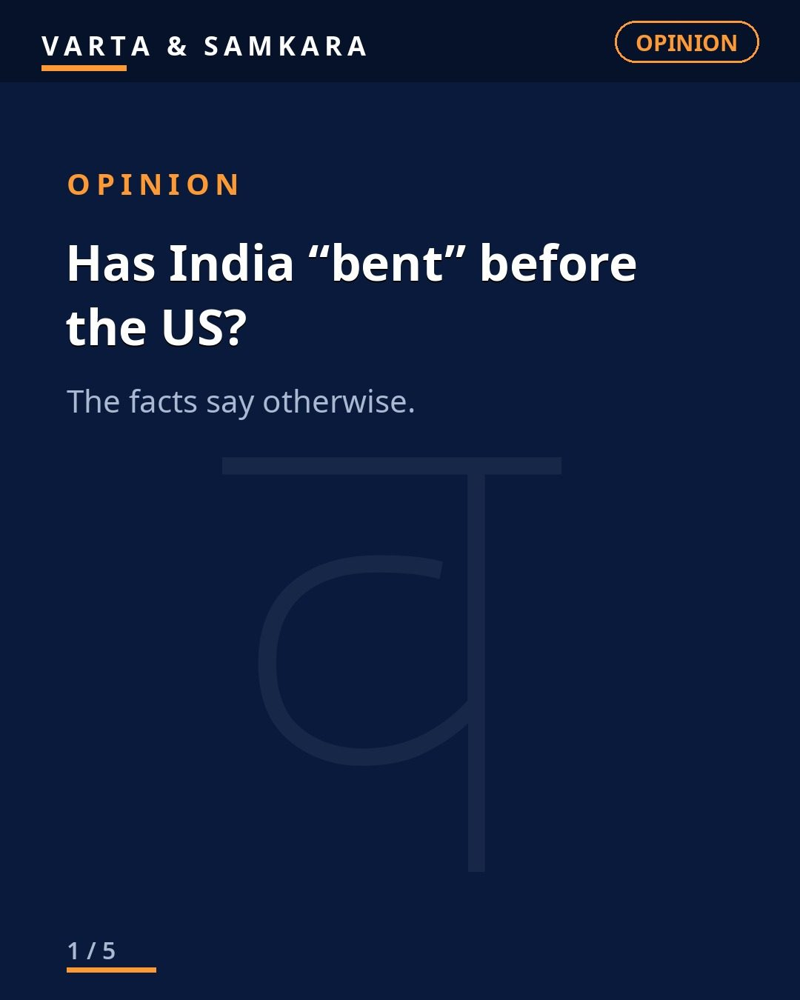
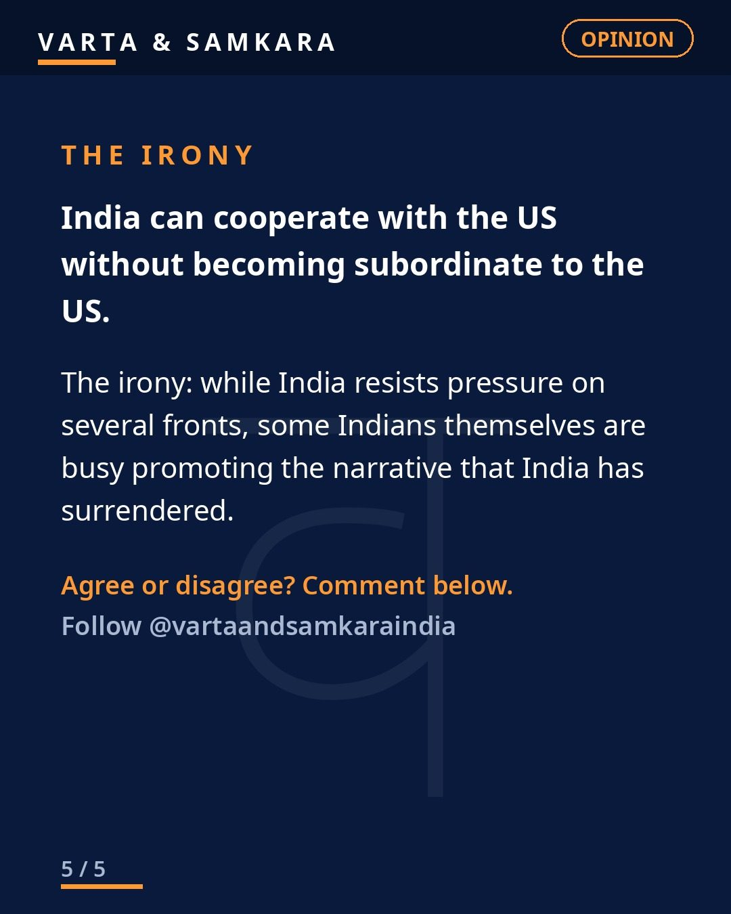

Opinion
OPINION | Has India "bent" before the US? The facts say otherwise.

Has India "bent" before the US? It is one of the most repeated claims in Indian political discourse. Every trade negotiation, every defense discussion, every diplomatic handshake gets framed the same way: India is surrendering, India is bowing, India is becoming a subordinate.
The facts say otherwise.
The UPI example
Take UPI's MDR, the merchant discount rate. UPI charges 0.3 to 0.4 percent, a fraction of Visa and Mastercard's 2 to 3 percent. And the proposed charges apply only above 2,000 rupees, where just around 5 percent of transactions sit. If India had bent, the story would look very different: American card networks dictating terms to Indian merchants. Instead, India built its own rails, kept them cheap, and protected small transactions. That is not what subordination looks like.
The deals that did not happen
Look at what India has not done. No F-35 deal, despite years of American salesmanship. No US trade deal signed, despite enormous pressure and multiple rounds of talks. If India were bending, those signatures would already be on paper. Walking away from the table, repeatedly, is the opposite of submission.
Russian oil is still flowing. That one fact alone demolishes the narrative. Washington made its displeasure clear, publicly and privately, and India kept buying. A subordinate does not do that. A subordinate apologizes and complies.
Cooperation is not capitulation
Ties with China are improving, even as the US would prefer a harder Indian line. FCRA reforms are moving ahead despite US warnings. On issue after issue, India takes the American call, listens politely, and then does what it considers to be in its own interest.
This is the part the "bent" narrative cannot explain. India cooperates with the US extensively: defense exercises, technology partnerships, Quad meetings, intelligence sharing. All real. But cooperation is not capitulation. Two countries can work together closely while each guards its own sovereignty. That is what mature powers do.
The difference between pressure and obedience
Here is the honest version. The US pressures India, constantly. That is what great powers do to everyone, including their closest allies. Pressure is normal. The question is what happens after the pressure, and with India, the answer is: not obedience.
India can cooperate with the US without becoming subordinate to it. The record, on UPI, on the F-35, on the trade deal, on Russian oil, on China, on the FCRA, backs that up. The people claiming India has bent are not reading the facts. They are reading their own politics into the facts.
In pictures

Source: Editorial (user viewpoint, figures as cited by user)
Visuals: Original text graphics
See the original reel / carousel with motion graphics on Instagram.
View on Instagram